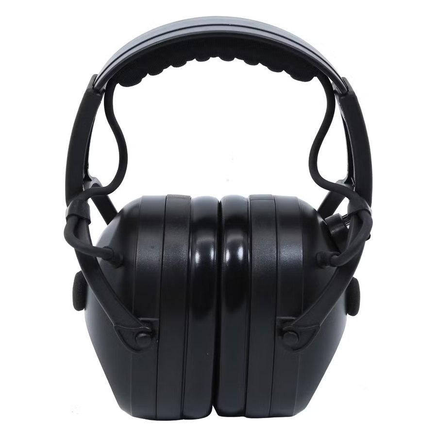
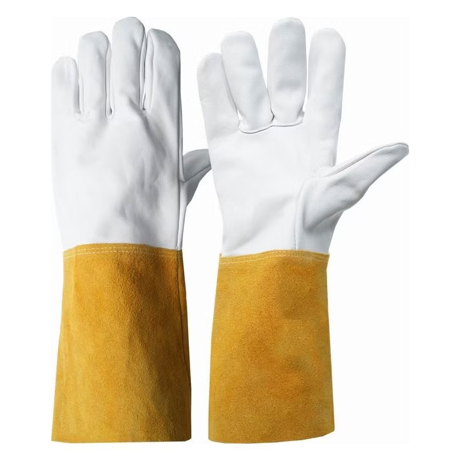
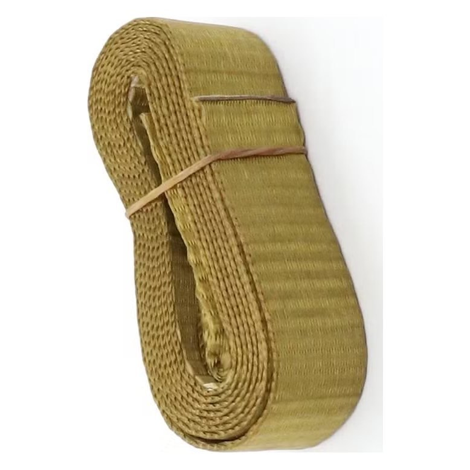

首页 / 个人防护装备（PPE） / 牛皮电焊防护围裙 (24×36英寸,6个工具袋,可调节)

个人防护装备（PPE）
牛皮电焊防护围裙 (24×36英寸,6个工具袋,可调节)
牛皮防护围裙,防火花、焊渣飞溅和高温,带可调节肩带和六个口袋。
牛皮围裙,用于焊接、打磨和锻造作业,保护胸部和大腿免受火花和焊渣飞溅。
技术参数
| 材质 | 牛皮 |
|---|---|
| 尺寸 | 24×36英寸(约61×91厘米) |
| 配置 | 6个工具袋,可调节肩带 |
| 尺码 | M至XXXL可调 |
| 海关编码（HS） | 42031000 |
欧盟标准与法规
Verordnung (EU) 2016/425个人防护装备法规:II类,经公告机构的欧盟型式检验,符合性声明EN ISO 11611:2015焊接及相关工艺防护服(1/2级)EN ISO 13688防护服通用要求(尺码、人体工学、标识)REACH Anhang XVII Nr. 47皮革制品六价铬限值(3 mg/kg)
搭配产品
本类别其他产品
一次性防护服 5/6型 （III类）带帽一次性连体防护服，防颗粒物和轻度喷雾，适用于拆除、清空和石棉整治作业。
化学防护服 3/4型 （一次性连体, III类）接缝密封的防液体喷射、防喷雾一次性连体服，适用于危险品处理、去污和整治作业。
一次性丁腈手套，无粉 （每盒100只）无粉、无乳胶的一次性丁腈手套，用于施工现场接触涂料、胶粘剂、清洁剂和脏污。
丁腈涂层装配手套 EN 388 （尼龙针织衬里）手掌丁腈涂层、防滑耐磨的装配/机修手套，适用于干式施工、模板作业和物料搬运。
防割手套 EN 388 C/D级 （HPPE针织衬里）
安全帽 EN 397 （ABS材质, 6点式内衬）ABS工业安全帽，6点式内衬，防护施工现场坠落物。
工业攀登安全帽 EN 12492 （ABS, 下颌带, 旋钮调节）带下颌带的头盔，用于高空作业、绳索作业和救援，可防冲击和侧向撞击。
护目镜 EN 166 （透明, 聚碳酸酯, 防刮擦/防雾）带侧护的透明护目镜，用于打磨、钻孔和拆除作业中防飞溅碎屑、粉尘和液滴。
全封闭/罩式护目镜 EN 166 （间接通风）全封闭护目镜，用于切割打磨、拆除和液体处理时防飞溅、粉尘和碎屑。
耳罩式听力防护 EN 352 （SNR约27–30 dB）头带式耳罩，用于凿击、拆除和切割作业中防护施工噪声。
耳塞 EN 352-2 （PU泡棉, 每桶50副）高隔声泡棉耳塞，适用于切割、电锤钻孔和振捣等噪声环境。
S3安全鞋 （皮革, 钢包头+钢中底）皮革S3安全鞋，配钢包头和防刺穿钢中底，适用于主体施工、拆除和清空作业。
S3安全靴 （皮革, 钢包头+钢中底）带钢包头和防刺穿鞋底的高帮安全靴，适用于结构施工、土方工程和拆除。
林业安全帽组合 （安全帽 EN 397、网面屏 EN 1731、耳罩 EN 352-3）安全帽、不锈钢网面屏和耳罩的配套组合，适用于油锯、割灌机和伐木作业。
PCM 降温背心及备用冷却块 （套装, 21 °C）采用相变材料（PCM）的热环境作业背心，21 °C 起被动降温，可搭配可更换冷却块。
防撞帽 EN 812 (ABS 内壳,棒球帽款)轻便防撞帽,配 ABS 内壳,适用于车间、物流和食品加工等无需 EN 397 防坠物保护的场所。
电工安全帽 EN 397 / EN 50365 (1,000 V 交流以内,无通风孔外壳)
带集成面屏的安全帽 (EN 397,护目 EN 166)ABS/EPS 安全帽,配护目镜/面屏和下颚带,适用于电气、矿山和建筑作业。
安全帽替换内衬及吸汗带 (4 点式,PVC/尼龙)可更换的 4 点式内衬,配针织吸汗带,用于翻新使用过的安全帽。
安全帽下颚带 (弹性,可调)弹性下颚带,用于固定安全帽,适合高处和有风的作业。
全视野护目镜 EN 166 (直接通风,全景镜片,松紧带)环形贴合护目镜,直接通风,可防粉尘和碎屑,配聚碳酸酯全景镜片。
罩戴式护目镜 EN 166 (适合戴眼镜者,聚碳酸酯,侧面防护)可戴在矫正眼镜外面的护目镜,配聚碳酸酯环绕镜片。
焊工护目镜 EN 166 / EN 169 (翻盖式,焊接镜片 108 × 50 毫米)焊工护目镜,配可翻起的焊接滤光玻璃镜片、间接通风和松紧带。

面部防护面屏 （聚碳酸酯面屏, 可调头戴）透明聚碳酸酯面屏配 ABS 头戴，可防护打磨、锯切和清洁作业中的颗粒、飞溅物和火花。
网面防护面屏 （钢丝网）带头戴透气网面防护面屏，头戴可调，适用于割灌机、油锯和园艺作业。
安全帽面屏支架 （铝制, PVC 可换面屏）铝制支架配 1 mm PVC 面屏，使安全帽变为面部防护；面屏可单独更换。
激光防护眼镜 （OD6+, 532/1064 nm, 聚碳酸酯, 全框）

可重复使用耳塞 （硅胶, 带连接绳）可水洗硅胶耳塞，带连接绳，颜色可选，每副约 4 g。

电子耳罩 （声音放大与限制, SNR 33 dB）带麦克风的耳罩：放大安静环境声、抑制大噪声；NRR 30 dB，2 节 AAA 电池。
头盔挂载式耳罩 （SNR 27 dB）轻便耳罩，可挂载于安全帽，SNR 27 dB，耳罩颜色可选。
蓝牙通信耳罩 （硅胶耳垫）蓝牙电子耳罩，声音放大与抑制，NRR 22–23 dB，SNR 26 dB。
带头带耳塞 （耳塞加头带, EN 352-2）可重复使用的硅胶耳塞配轻质塑料头带，作业间隙可挂在脖子上。
机修手套 （合成革掌面、氨纶手背、魔术贴腕口）合身的装配手套，合成革掌面加硅胶防滑，适用于装配、车间和维修。

牛皮正面革手套 （装配／驾驶手套, 无衬里）无衬里的正面革手套，人体工学拇指设计，适用于装配、仓库和园艺作业。

化学品防护手套 （丁腈, 绿色, 33 cm, 可重复使用）可重复使用的长腕丁腈手套，用于清洁和维修时防护酸、碱、油类及溶剂。
乳胶一次性手套，无粉 （每盒 100 只）轻薄有弹性的天然乳胶一次性手套，用于清洁、车间和食品加工。

耐热手套带硅胶／PVC 防滑条的棉质耐热手套，适用于热工件、炉具和壁炉用品。
电焊手套 （牛二层皮, 35 cm 长袖口, EN 12477）两层牛二层皮长袖口手套，防火花、焊渣飞溅和辐射热。
冬季保暖手套 （丙烯腈抓绒内衬、乳胶涂层、荧光橙）带防滑乳胶涂层的加绒工作手套，适用于户外作业、冷库和冬季工地。
防振手套 （EN ISO 10819）用于钻孔、打磨和拆除工具的防割减振工作手套。
S1级安全鞋 （低帮, 绒面革/网布）轻便S1级安全鞋，钢头，防静电，后跟吸能。

S1P级安全鞋带钢头和防刺穿中底的S1P级安全鞋，适用于工地和工业。
S2级安全鞋 （防水, 高帮磨砂皮）带钢头的防水S2级安全鞋，疏水磨砂皮鞋面。

S3S级安全鞋符合 EN ISO 20345:2022 新等级S3S的安全鞋，带防刺穿中底（PS）。
带鞋头的S5级橡胶靴防水PVC安全靴S5，钢头加钢中底，适用于潮湿作业、混凝土和农业。
工地冬季S3安全靴用于寒冷工地的高帮防水S3安全靴，磨砂皮；

防静电 （ESD）安全鞋带钢头的防静电安全鞋，适用于电子制造、洁净室和仓库。
访客用套穿式安全鞋套 （带钢制鞋头, 可重复使用）可重复使用的TPU鞋套，配钢制鞋头和防滑鞋底，让访客在车间和工地上穿在普通鞋外即可获得鞋头防护。
安全鞋用鞋垫 （PU泡棉加凝胶, 减震, 可裁剪）由PU泡棉和凝胶制成的减震舒适鞋垫，适用于安全鞋和工作靴，让长时间站立更舒适。
EN 358工作定位系统——带绳索调节器的定位绳 （编织芯绳, 最长2米）符合EN 358的可调长度定位绳，挂在定位腰带侧环上，使作业者在杆、墙、屋面上双手自由作业。
EN 360自动收缩防坠器 （织带式, 带缓冲器, 1.8–3.5米）
EN 795锚点——B型便携式锚固吊带 （聚酯织带, 1.2米）纺织锚固吊带，缠绕在梁、柱或管道上，为安全带和防坠器提供便携式锚固点。
EN 362连接卡扣 （钢制, 螺纹/自锁, 25 kN）带自锁门的钢制卡扣，开口19毫米，可靠连接安全带、连接绳和锚点。
EN 1496救援提升装置 （电动救援/下降装置, 300公斤）用于高空救援的电动提升和下降装置，可用绳索提升或放下伤员。
带缓冲器Y型系带 (EN 354 / EN 355,约2米,双钩)双腿缓冲系带,连接安全带与锚点,换挂锚点时始终保持连接。
锚点吊带 EN 795 B型 (织带环,约1.5米)织带环,绕在承重构件上形成供一人使用的便携式锚点。
护绳套/边缘保护 (绳索作业护套)耐磨护套,保护绳索免受锐边和摩擦点损伤。
凝胶护膝 (劳保,尼龙/橡胶,可调节)带凝胶垫的护膝,适用于贴砖、地面和安装等跪姿作业。
硬壳护膝 (防护壳,带衬垫,可调节)带硬壳的护膝,防刺穿和压力峰值,适用于粗糙、多锐边地面作业。
跪垫 (NBR泡棉,约44 × 39 × 6 cm)厚实防水泡棉垫,用作地面、园艺和安装作业的跪垫。
工业与手工业护肤霜 (100 ml软管)工作前涂抹的低油护肤霜,保护皮肤免受潮湿、摩擦和污染。
手部护肤霜
液体皮肤清洁剂,2升泵头瓶 (含磨砂颗粒洗手液)含磨砂颗粒的液体工业洗手液,可去除机油、油脂和污垢,2升泵头瓶装。
洗手膏2升桶装 (工业洗手膏,无香型)2升桶装洗手膏,适用于车间和工地,可去除油污、油脂和顽固污垢。
乙醇基免洗手消毒凝胶 (75%,泵头瓶)适用于工地和企业的酒精手消毒凝胶,无需用水。
工业手部清洁湿巾 (50片桶装,20×30厘米)大尺寸湿巾,带粗糙面,可去除油污、油脂、油漆和碳黑,无需用水。
工地用防晒霜SPF 50+ (乳液,防水,100毫升)
绝缘防护手套 EN 60903 （00级, 乳胶, 最高500 V交流）乳胶电工手套，适用于最高500 V交流电的设备带电或近电作业。
链锯防切割裤 （EN ISO 11393-2, 棉质, 可调腰带）内置防切割层的林业工作裤，用于手持链锯作业。
面罩替换面屏 （PVC/PC透明, 8×15.5英寸）用于头盔式面部防护的透明PVC或聚碳酸酯替换面屏。
护目镜替换挂绳 （尼龙绳配硅胶套）套在镜腿上的固定挂绳，使护目镜稳固挂在头部或颈部。

警示臂带 （反光加LED灯, 可调节, CR2032）带反光面和LED常亮/闪烁灯的可调臂带，提高夜间可见度。

手臂/腿部反光带 （可调节, 31–48 cm）可佩戴于手腕、手臂、脚踝或小腿的被动式反光带，可反射车灯光线。
急救箱 DIN 13157 （企业急救包, 含壁挂支架）符合DIN 13157的企业急救包（已配齐物品），适用于车间、工地和办公室。
水上作业救生衣 / 泡沫浮力背心 （EPE 泡沫, 尼龙面料, 成人款）

个人防护装备收纳包 / 装备手提包结实的帆布手提包，用于携带和整理安全帽、护目镜、护耳器和手套。
护目镜镜片清洁湿巾 （无酒精、防雾, 每盒 40 片）预湿、无酒精、带防雾效果的镜片湿巾，适用于护目镜、面屏和显示屏。
一次性PVC乙烯基手套，无粉 （100只/盒）不含乳胶的透明PVC一次性手套，适用于食品处理、清洁和轻型作业。
触屏兼容装配手套 （尼龙/氨纶, 发泡丁腈, 15针）薄款针织发泡丁腈手套，三指可触屏操作。

全身式安全带 EN 361 (涤纶织带)带背部D形环的全身式防坠落安全带。

牛二层皮电焊袖套 (双)焊工防火花袖套。
氯丁橡胶耐化学手套 (30厘米,双)耐酸碱可重复使用手套。
S1安全凉鞋 (钢包头)夏季透气安全凉鞋。